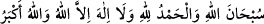
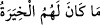

Yine hadiste buyrulmuştur ki: “Allah Teâlâ ashâbımı, peygamberler ve rasûller
dışında bütün âlemlere üstün kılmış ve seçmiştir. Benim için ashâbım arasından
dördünü –Ebu Bekir, Ömer, Osman ve Ali– seçip ayırmış ve onları ashâbımın en
hayırlıları kılmıştır. Ashâbımın hepsinde hayır vardır. Ümmetimi de diğer ümmetlere
üstün kılıp seçmiştir. Benim için ümmetin arasından ashâbımdan sonra peşpeşe gelen
dört kuşağı; birinci, ikinci, üçüncü ve dördüncü kuşakları seçmiştir.”[133]
Bil ki insanın ihtiyarı yoktur; ancak mülkü olanın ihtiyarı olabilir. İnsanoğlu kul ve
köledir; kölenin ise mülkü yoktur. Dinin var saydığı mülk, mecâzîdir; en kısa zamanda
yok olur. Hakiki mülk, zevali olmayan mülktür. Bu mülk de Allah’ın mülküdür, onun
sâhibi de kemal sâhibi olan Allah Teâlâdır. O’nun mülkünün zevali yoktur; O her şeyden
münezzehtir.
Ebedî Hükümdar’ın mülkü dışında
Bütün taht ve mülkler yok olur
Keşfü’l-esrâr’da kaydedildiğine göre, Allah, âlemi yarattı ve ondan istediğini seçti.
Melekleri yarattı; onlar arasından Cebrail, Mikail, İsrafil ve Azrail’i seçti. Âdem ve
Âdemoğullarını yarattı; onlar arasından peygamberleri seçti. Peygamberler arasından
İbrahim Halilullah, Mûsâ Kelîmullah ile İsa ve Muhammed’i seçti (Allah’ın selâmı
üzerlerine olsun). Allah Rasûlü’nün ashâbını yarattı; Ebû Bekir-i Temîmî, Ömer-i
Adevî, Osmân-ı Emevî ve Ali-yi Hâşimî’yi seçti.
Yeryüzünü yarattı; içinden, Allah Rasûlü’nün doğduğu yer olan Mekke’yi, hicret ettiği
yer olan Medine’yi, Miraca çıkarken uğradığı Beytü’l-makdis’i seçti.
Günleri yarattı; içinden, duâlara icâbet edilen Cuma gününü, iftihar günü olan arife
gününü, hediye günü olan bayram gününü ve yaratılış günü olan aşureyi seçti.
Geceleri yarattı; içlerinden, Allah’ın kendi varlığıyla nüzûl ettiği ve kullarına ikram
ve ihsan ile seslenip hoşnut kıldığı berâat gecesini; çakıl taşları adedince gökyüzündeki
meleklerin yeryüzüne gönderildiği ve kullara rahmet saçtıkları kadir gecesini, rahmet ve
mağfiret kapılarının açılıp günahkârların bağışlandığı bayram gecesini seçti.
Dağları yarattı; içinden, Musâ (a.s.)’ın Hakk’a münâcât için gittiği Tûr’u, Nûh
(a.s.)’ın kurtulduğu Cûdî dağını, Arap kavminden Mustafa (s.a.)’in peygamberlik
vazifesinin tebliğ edildiği Hıra’yı seçti.
İnsan nefsini yarattı; içinden gönül ve dili seçti. Gönül, marifet nûrunun mahalli, dil
ise kelime-i şehâdetin yeridir. Gökten kitaplar gönderdi; içlerinden dört tanesini seçti.
Bunlar, Tevrat, İncil, Zebur ve Kur’an’dır. Kelimelerden dört tanesini, “Sübhânallah”,
“Elhamdülillâh”, “Lâilâhe illallah” ve “Allâhu ekber”i seçti. Hadiste buyrulmuştur ki:
“Allah’ın en çok sevdiği kelimeler; “__WORD__”dir; hangisiyle
başlarsan başla zararı yoktur.”[134]
Zühretü’r-riyâz’da der ki: “__WORD__ (Onların seçim hakkı yoktur), yâni kâfirler